Bei Fragen einfach unterbrechen
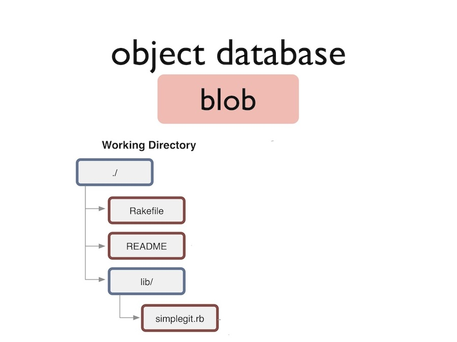
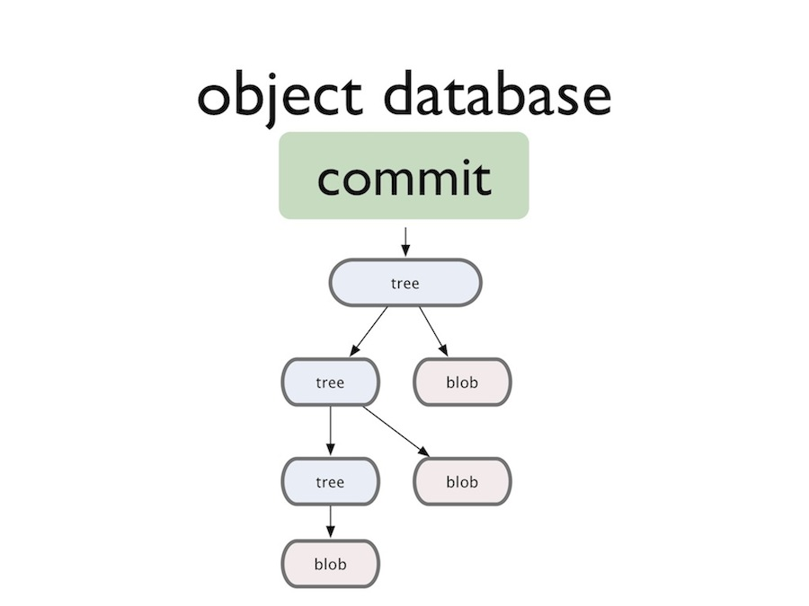
$ cat .git/refs/heads/master 2d5f0b92c01b3af6b18fa9fd4b9457f28c55f8c9
$ git checkout master $ cat .git/HEAD ref: refs/heads/master
$ git checkout 3ab0946 $ cat .git/HEAD 3ab0946694019e9ec819cddd4999b635449ecc25
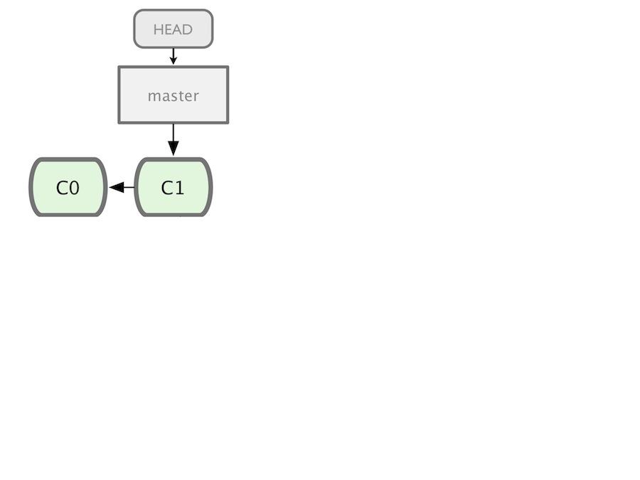
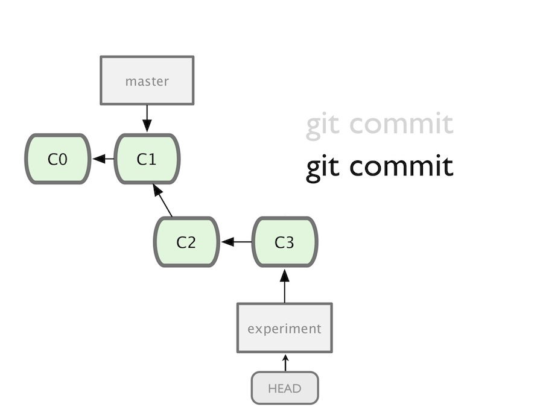
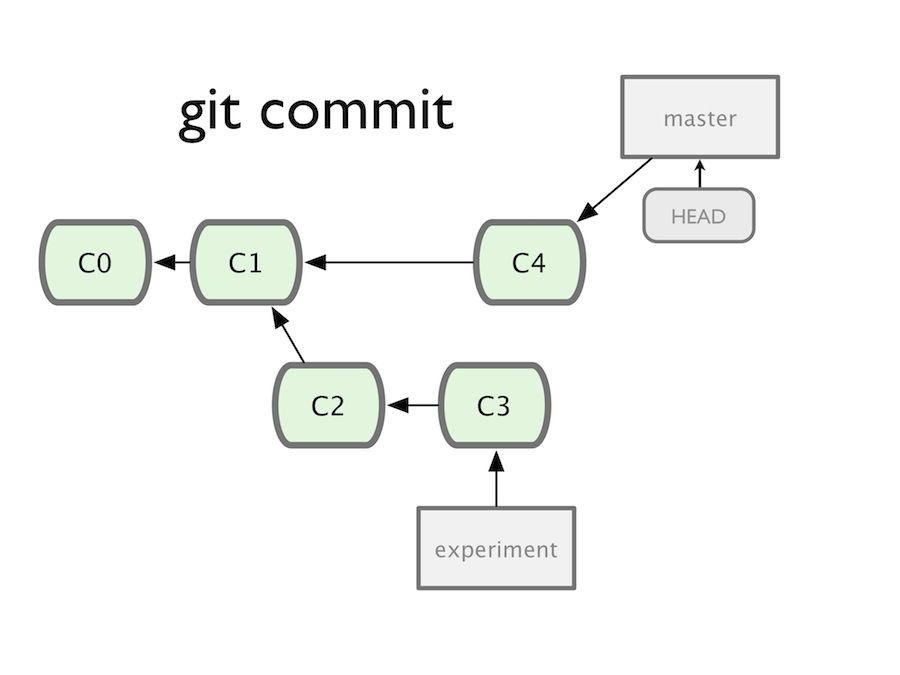
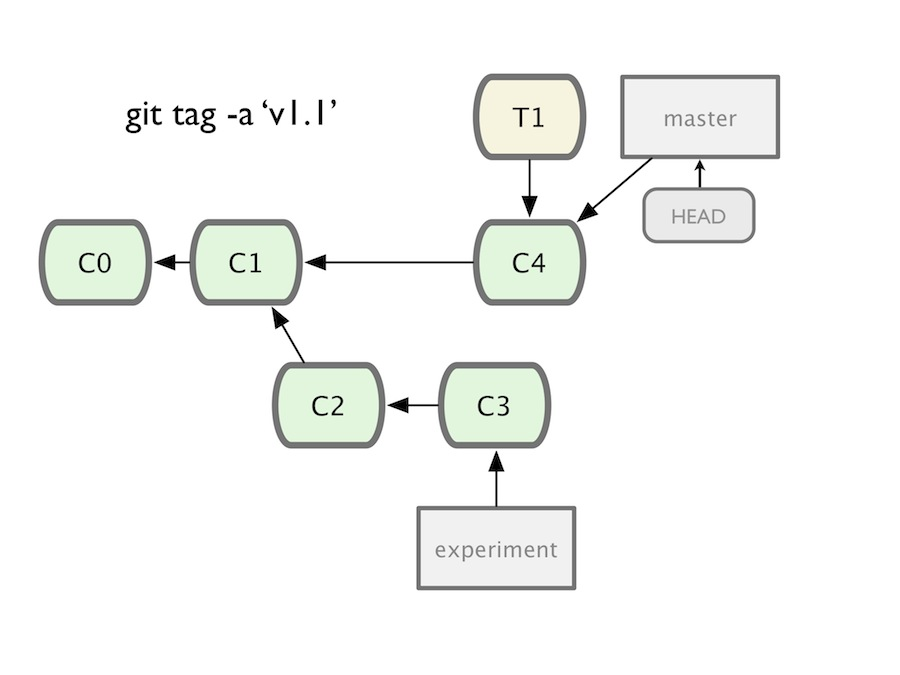
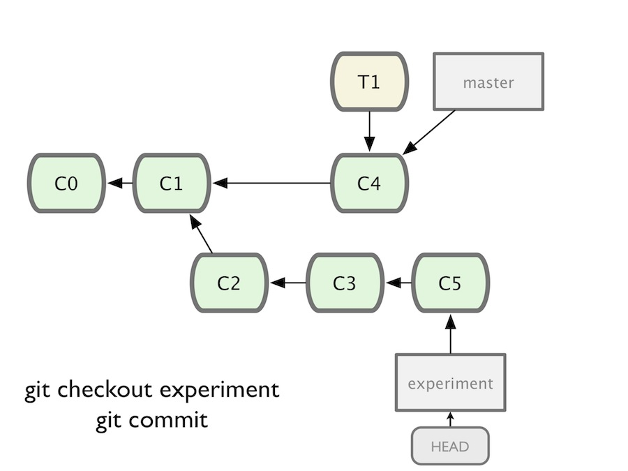
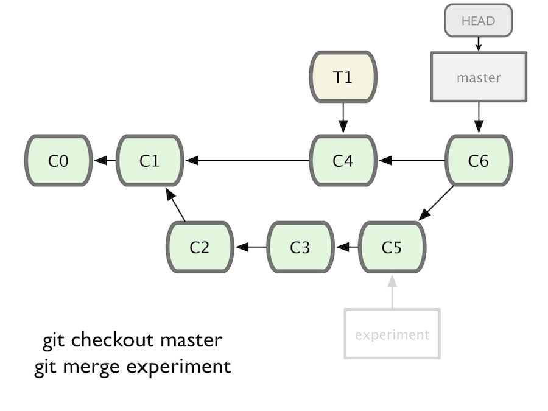
b645be7a5d01cb5e143fcd2c0581a4dc69c595b9
b645be7a5d01cb5e143fcd2c0581a4dc69c59 b645be7a5d01cb5e1 b645be7a5d b645be7
origin/master refs/remotes/origin/master master refs/heads/master v1.0 refs/tags/v1.0
master^ master^2 master^3
master~2 master~3 master~7
master@{yesterday} master@{1 month ago}
master@{1} master@{5}
<treeish>:<path> master:/path/to/file my_feature:/app/models/person.rb release/1.0:/spec/models/person_spec.rb
<treeish>..<treeish> 7b593b5..51bea1 master..my_feature
$ git status ## master M git_intermediate/git_intermediate.md $ git stash $ git status ## master $ git stash pop $ git status ## master M git_intermediate/git_intermediate.md
$ git blame daemon.c 979e32fa (Randal L. Schwartz 2005-10-25 16:29:09 -0700 1) #include "cache.h" 85023577 (Junio C Hamano 2006-12-19 14:34:12 -0800 2) #include "pkt-line.h" 77cb17e9 (Michal Ostrowski 2006-01-10 21:12:17 -0500 3) #include "exec_cmd.h" 49ba83fb (Jon Loeliger 2006-09-19 20:31:51 -0500 4) #include "interpolate.h" f8ff0c06 (Petr Baudis 2005-09-22 11:25:28 +0200 5) 85023577 (Junio C Hamano 2006-12-19 14:34:12 -0800 6) #include <syslog.h> 85023577 (Junio C Hamano 2006-12-19 14:34:12 -0800 7) 695dffe2 (Johannes Schindelin 2006-09-28 12:00:35 +0200 8) #ifndef HOST_NAME_MAX 695dffe2 (Johannes Schindelin 2006-09-28 12:00:35 +0200 9) #define HOST_NAME_MAX 256 695dffe2 (Johannes Schindelin 2006-09-28 12:00:35 +0200 10) #endif 695dffe2 (Johannes Schindelin 2006-09-28 12:00:35 +0200 11) 415e7b87 (Patrick Welche 2007-10-18 18:17:39 +0100 12) #ifndef NI_MAXSERV 415e7b87 (Patrick Welche 2007-10-18 18:17:39 +0100 13) #define NI_MAXSERV 32 415e7b87 (Patrick Welche 2007-10-18 18:17:39 +0100 14) #endif 415e7b87 (Patrick Welche 2007-10-18 18:17:39 +0100 15) 9048fe1c (Petr Baudis 2005-09-24 16:13:01 +0200 16) static int log_syslog; f8ff0c06 (Petr Baudis 2005-09-22 11:25:28 +0200 17) static int verbose; 1955fabf (Mark Wooding 2006-02-03 20:27:04 +0000 18) static int reuseaddr;
$ git cherry-pick 6018dbfa70
Finished one cherry-pick. [test e144b96] Add unit tests for index manipulation Author: Vicent Marti <tanoku@gmail.com> 4 files changed, 209 insertions(+), 0 deletions(-)
$ git cherry-pick -m1 bdeeba1
[test be2cee9] Merge pull request #12485 from arunagw/code-removal Author: Rafael Mendonça França <rafaelmfranca@gmail.com> 2 files changed, 35 deletions(-) rename actionview/test/{lib => actionpack}/controller/view_paths_test.rb (100%) delete mode 100644 actionview/test/lib/controller/fake_controllers.rb
git merge --no-ff topic/feature
git merge --ff-only topic/feature
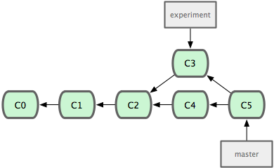
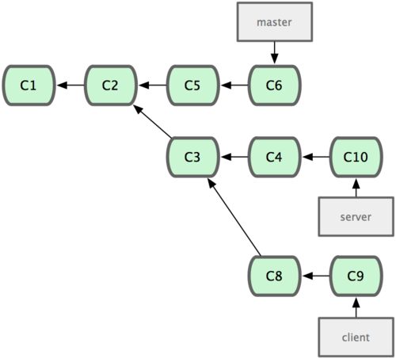
git rebase --onto master server client
git checkout master && git merge client 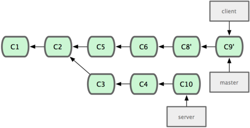
git rebase master server
git checkout master && git merge server
git reflog
0a620d1 HEAD@{11}: reset: moving to HEAD^ 95a9b7d HEAD@{12}: rebase -i (finish): returning to refs/heads/store_accessor_hstore_bug 95a9b7d HEAD@{13}: rebase -i (pick): hstore only allows string keys. 0a620d1 HEAD@{14}: rebase -i (pick): `stored_attributes` need to be specific to a subclass. d138b71 HEAD@{15}: rebase -i (pick): test to verify the `ActiveRecord::Store` behavior with PG bdeeba1 HEAD@{16}: checkout: moving from store_accessor_hstore_bug to bdeeba1 a04f344 HEAD@{17}: commit: `stored_attributes` need to be specific to a subclass. 6f7b700 HEAD@{18}: commit: test to verify the `ActiveRecord::Store` behavior with PG's json type 33829ab HEAD@{19}: commit (amend): hstore only allows string keys. 28152cd HEAD@{20}: commit: hstore only allows string keys. bdeeba1 HEAD@{21}: reset: moving to HEAD^ 1986aa9 HEAD@{22}: rebase finished: returning to refs/heads/store_accessor_hstore_bug 1986aa9 HEAD@{23}: rebase: TMP bdeeba1 HEAD@{24}: checkout: moving from store_accessor_hstore_bug to bdeeba1 94fb685 HEAD@{25}: checkout: moving from master to store_accessor_hstore_bug bdeeba1 HEAD@{26}: rebase finished: returning to refs/heads/master bdeeba1 HEAD@{27}: checkout: moving from master to bdeeba1 a0c0c1c HEAD@{28}: checkout: moving from store_accessor_hstore_bug to master 94fb685 HEAD@{29}: rebase finished: returning to refs/heads/store_accessor_hstore_bug 94fb685 HEAD@{30}: rebase: TMP a0c0c1c HEAD@{31}: checkout: moving from store_accessor_hstore_bug to a0c0c1c 329d9f8 HEAD@{32}: checkout: moving from master to store_accessor_hstore_bug a0c0c1c HEAD@{33}: checkout: moving from 4-0-stable to master cfd9186 HEAD@{34}: cherry-pick: Merge pull request #12283 from JuanitoFatas/rails-on-rack 582a90c HEAD@{35}: checkout: moving from master to 4-0-stable
git reflog --date=relative 4-0-stable
1660f53 4-0-stable@{11 minutes ago}: rebase finished: refs/heads/4-0-stable onto 1660f53 8355355 4-0-stable@{2 days ago}: rebase finished: refs/heads/4-0-stable onto 8355355 1366df2 4-0-stable@{3 days ago}: commit (cherry-pick): cleanup changelog entry format.[ci skip] 146132d 4-0-stable@{3 days ago}: rebase finished: refs/heads/4-0-stable onto 146132d 9c98535 4-0-stable@{3 days ago}: rebase finished: refs/heads/4-0-stable onto 9c98535 c3fa44b 4-0-stable@{6 days ago}: rebase finished: refs/heads/4-0-stable onto c3fa44b cfd9186 4-0-stable@{8 days ago}: cherry-pick: Merge pull request #12283 from Juanito/patch9 582a90c 4-0-stable@{8 days ago}: cherry-pick: Merge pull request #12473 from claudiob/patch1 9f5ec21 4-0-stable@{9 days ago}: cherry-pick: Merge pull request #12463 from ulyssecarion/master 64ba1ab 4-0-stable@{9 days ago}: rebase finished: refs/heads/4-0-stable onto 64ba1ab faaa57f 4-0-stable@{2 weeks ago}: cherry-pick: Merge pull request #12431 from GRoguelon/master 4135e60 4-0-stable@{2 weeks ago}: cherry-pick: Merge pull request #12430 from vipulnsward/fix ceaf211 4-0-stable@{2 weeks ago}: rebase finished: refs/heads/4-0-stable onto ceaf21
$ git clone https://github.com/senny/git-workshop-rails
Die Slides sind auch online verfügbar: http://senny.github.io/git-workshop
/